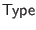

Programs are translated to a new intermediate language without polymorphism or non-  constructors. Error messages may pop up here if earlier phases failed to remove such features.
This is the stage at which concrete names are generated for cookies, tables, and sequences. They are named following the same convention as for links and actions, based on module path information saved from earlier stages. Table and sequence names separate path elements with underscores instead of slashes, and they are prefixed by uw_.